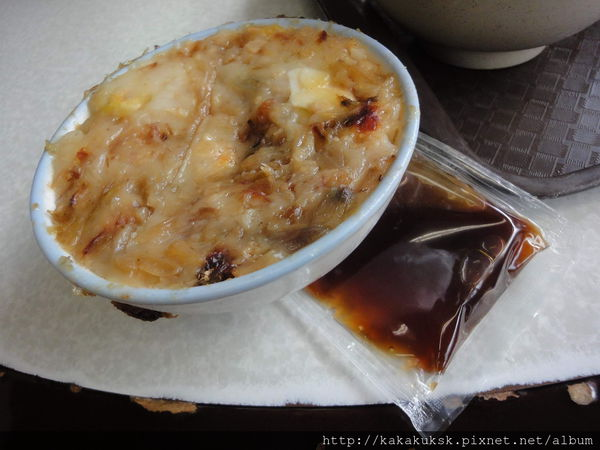

 傳統小吃的碗粿，可以說是情有獨鍾，在善化喝完一等涼冬瓜茶後， 就來到麻豆這間生意超好、人超多的阿蘭碗粿，阿蘭碗粿好吃的秘訣， 在於精選食材、用料實在，加上又在麻豆交流道附近，很多人都會慕名而來吃唷。 瓷碗蒸碗粿~上方還有一朵小香菇及油蔥酥，好有阿嬤的古早味fu 桌上有蒜茸醬油膏可加。也有辣椒醬加辣更夠味、辣椒醬的辣度只有一點點 碗粿裡有肉片及水煮蛋、油蔥很香 台南縣麻豆鎮中山路179-8號 06-572-4035 06:00-20:00 一蘭拉麵 深坑臭豆腐 拾七石頭火鍋 上課心得
傳統小吃的碗粿，可以說是情有獨鍾，在善化喝完一等涼冬瓜茶後， 就來到麻豆這間生意超好、人超多的阿蘭碗粿，阿蘭碗粿好吃的秘訣， 在於精選食材、用料實在，加上又在麻豆交流道附近，很多人都會慕名而來吃唷。 瓷碗蒸碗粿~上方還有一朵小香菇及油蔥酥，好有阿嬤的古早味fu 桌上有蒜茸醬油膏可加。也有辣椒醬加辣更夠味、辣椒醬的辣度只有一點點 碗粿裡有肉片及水煮蛋、油蔥很香
台南縣麻豆鎮中山路179-8號 06-572-4035 06:00-20:00
一蘭拉麵 深坑臭豆腐 拾七石頭火鍋 上課心得
一蘭拉麵
深坑臭豆腐
拾七石頭火鍋
上課心得